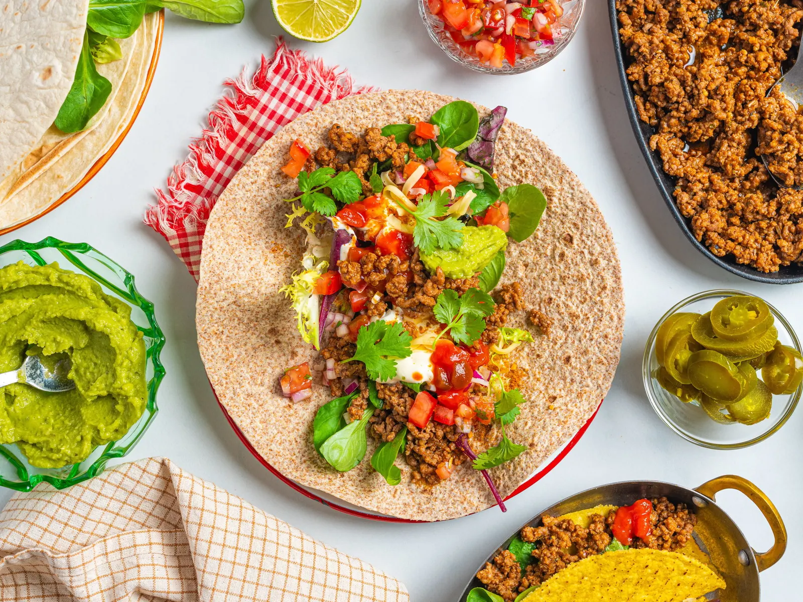

Tacos

Description
Tacos are the perfect mix of flavor and fun! Whether you're hosting a taco night or just craving a quick and tasty meal, this recipe has you covered. Packed with seasoned beef, fresh veggies, and your favorite toppings, these tacos are easy to make and always a crowd-pleaser. You can also switch things up with chicken or vegetarian fillings. Grab your tortillas and get ready for a delicious taco feast!
Ingredients
- Ground beef (500g)
- Onion (1 small, diced)
- Taco seasoning (1 packet or 2 tablespoons homemade)
- Water (1/4 cup)
- Taco shells (8-10, hard or soft)
- Shredded lettuce (2 cups)
- Tomato (1 large, diced)
- Shredded cheese (1 cup, cheddar or Mexican blend)
- Sour cream (1/2 cup)
- Salsa (1/2 cup)
- Avocado (1, sliced or mashed for guacamole)
- Fresh cilantro (optional, for garnish)
- Lime wedges (optional, for serving)
Steps
- Cook the ground beef.
- Season the beef.
- Prepare the toppings.
- Warm the taco shells:
- For soft tortillas, warm them in a dry skillet for about 30 seconds per side or microwave them for 15-20 seconds.
- For hard taco shells, you can heat them in the oven for a few minutes according to package instructions.
- Assemble the tacos.
- Serve
Enjoy!